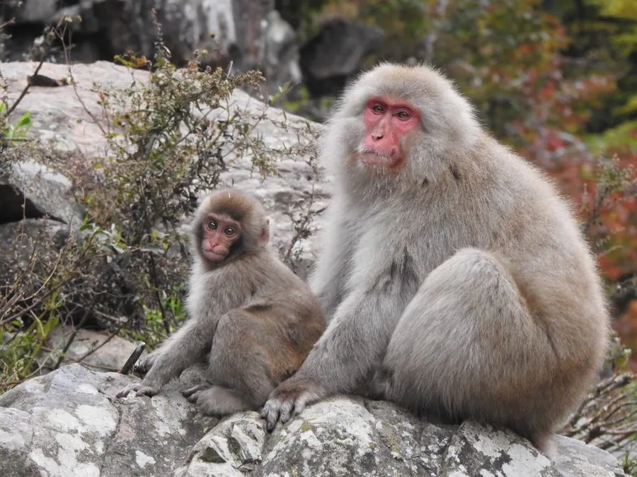

哺乳动物 · 动物界
日本猕猴 Macaca fuscata

日本特有的猕猴，毛厚耐寒，是分布最北的非人灵长类，著名的雪猴会在冬季泡温泉取暖，社会等级森严。
- 分类
- 门脊索动物门纲哺乳纲目灵长目科猴科属猕猴属
- 栖息环境
- 日本本州、四国、九州的森林与山地，耐寒性强
- 地理分布
- 日本各主要岛屿的森林和山地，为日本特有种
- 保护级别
- IUCN 无危（LC）
物种志
日本猕猴体长 0.5–0.6 米，尾长约 0.1 米，体重 8–14 kg。它的被毛为灰褐至浅棕色，冬季毛被明显加厚，面部裸露呈粉红色；身体结实，四肢粗壮，尾部短小，能够适应日本冬季的严寒和大雪。
日本猕猴分布于日本本州、四国、九州等岛屿的森林和山地，是分布最靠北的非人灵长类动物，能在 -20℃ 的低温中活动，部分种群会在地热温泉中泡澡取暖，被称为“雪猴”。它以果实、树叶、嫩芽、树皮和昆虫为食，结成 20–100 只的群体，母系社会等级森严，地位由母亲继承。猕猴智力高，会互相学习新的取食技巧，也因取食农作物与人类发生冲突。雌性妊娠期约 170–180 天，每胎 1 仔，幼仔在群体中受到严格的社会地位影响。
形态与习性
- 食性果实、树叶、嫩芽、树皮与昆虫
- 体长0.5–0.6 m，尾长约 0.1 m
- 体重8–14 kg
- 寿命野外约 20–25 年
- 繁殖妊娠期约 170–180 天，每胎 1 仔
- 社会结构20–100 只群体，母系社会，等级由母亲继承
- 耐寒可在 -20℃ 环境中活动，部分种群泡温泉
趣味知识
- 日本猕猴是分布最靠北的非人灵长类，能在 -20℃ 的严寒中活动。
- 部分日本猕猴会在地热温泉里泡澡取暖，因此得名“雪猴”。
- 日本猕猴的社会等级由母亲传承，幼仔的地位取决于母系血统。
- 它们会互相学习新的取食方法，形成独特的群体文化。